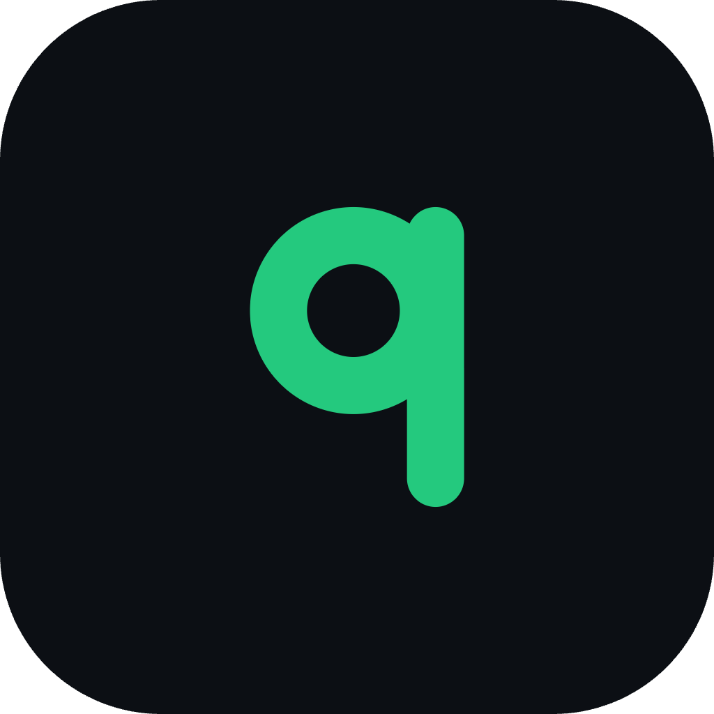
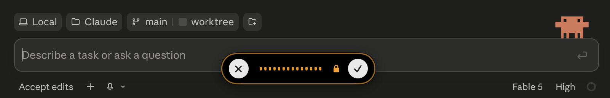
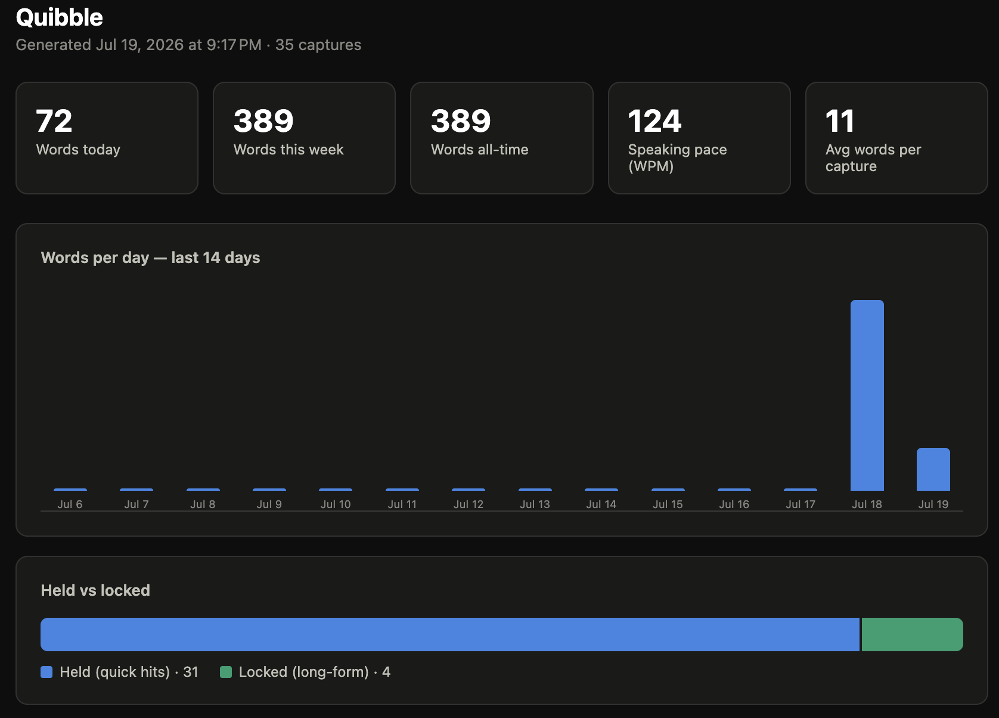

Quibble: a local dictation app for my Mac
Hold a key, talk, and the text lands wherever my cursor is.

01Why I built it
I've developed the habit of dictating prompts to Claude. This is due to 1) it being regularly shared as a best practice on LinkedIn (verbal prompts consistently provide more context than written ones) and 2) it being much faster than typing. I started experimenting with this approach a few months back, using Wispr Flow. It's a great tool, and I've really enjoyed the experience. It's intuitive to use, extremely accurate, filters out filler words, and you have access to some interesting insights around your usage.
But....
I've been regularly hitting the weekly word cap, and I'm not interested in paying for the subscription. Knowing that it's a relatively straightforward point solution, I decided to vibe code my own native Mac app in an evening.
02What I built
Quibble is a voice-to-text app that turns my voice into text wherever I'm working. I hold the fn key, speak some magical words, and it pastes as text in whatever app I'm working in. Similar to Wispr Flow, a small pill floats at the bottom of the screen. While I'm using it, a little waveform pops up to show that it's active.
Transcription happens on the Mac with a local speech model. My V2 will switch on a call to Claude's API to clean up filler words and check spelling against my dictionary of common misspellings, so names like "Saskatoon" come out right every time. It would also open up functionality for summarizing or making other changes to the text.

03How it works
I started this build with an extensive interview. I prompted Claude Code to grill me one question at a time: hold or toggle? what happens when a paste fails? how will you know when the audio is no longer being captured? This helped me think through the architecture before starting to build.
The transcription is local (NVIDIA's Parakeet model running through CoreML). I picked it because it's fast, free, and local on an Apple device. The app itself is native Swift, which I didn't write a line of. Claude Code did, because the hard parts of a dictation tool (grabbing the fn key, floating a panel over every app, low-latency microphone access) are things macOS only hands to a native app.
I've run into a few instances with Wispr Flow where the text didn't post. With Wispr, it's easy because you can just go into the app and copy the text. To make sure my app could deal with the same problem, I made every capture save to a local database. The additional benefit of this approach is that it gives me the data for a dashboard that tracks my usage stats.

04What broke & what I learned
I didn't realize this before, but macOS uses the fn key for an emoji shortcut. Before I could use it for Quibble, I had to tell the OS to stop opening the emoji picker every time I held it down.
I also spent a stretch confused about why every dictation was pasting twice, once clean and once raw. The answer was a bug I hadn't anticipated. I had been comparing the functionality with Wispr and didn't realize that I was running both apps at the same time. Whoopsies.
The big takeaway from this project was the importance of a thorough plan before having Claude write any code. I've never planned a build this thoroughly before, and the benefit downstream was immediately apparent. It worked perfectly on the first try and the only thing I've had to debug so far is my own ignorance.